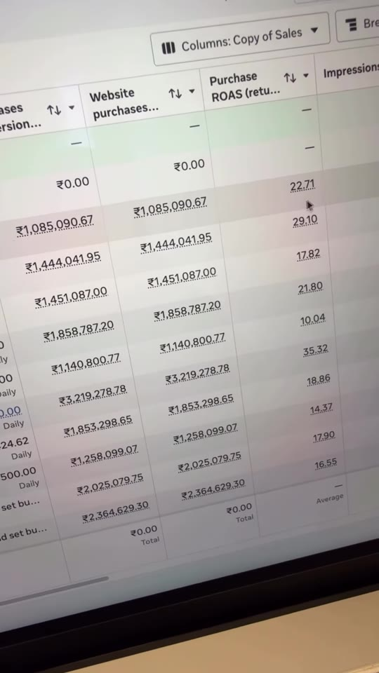
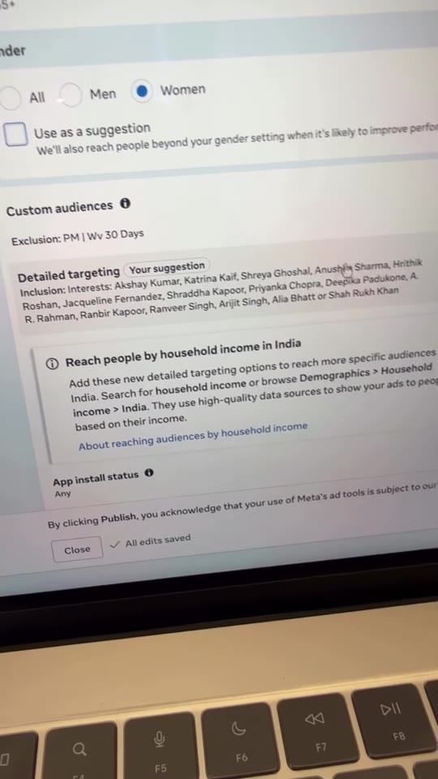
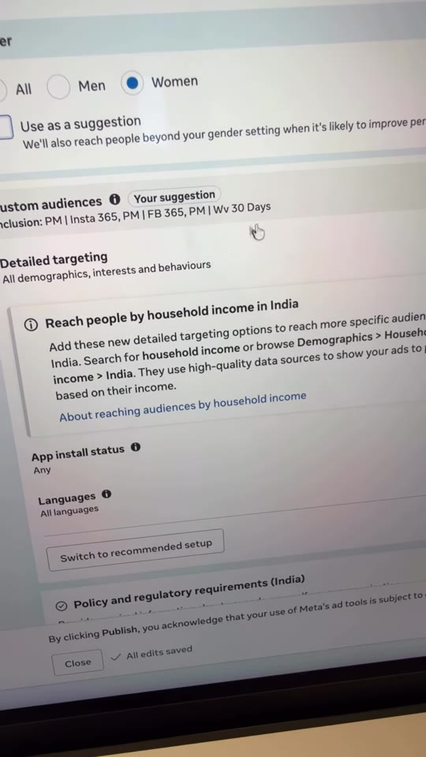
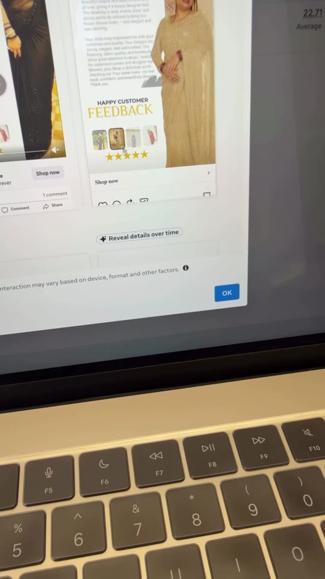
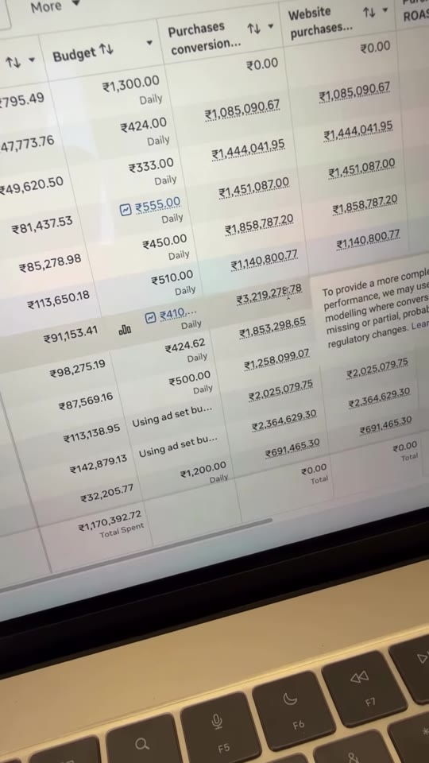

Meta-Ads · Campaign-Structure
Full-Funnel Meta Ads Structure for 20X+ ROAS in E-Commerce Apparel
Library / Meta-Ads / Campaign-Structure
A live breakdown of a 22.7X ROAS Meta Ads structure for an Indian women's apparel brand (Jyoti Sarees). On a ₹47,779 spend, the active review campaign generated ₹10,85,090 in sales. The architecture uses a staged funnel: TOF cold prospecting with Bollywood celebrity interests and recent visitor exclusions, MOF retargeting built on social engagers and customer WhatsApp feedback videos, BOF catalog dynamic ads featuring bestsellers only, and interest A/B testing (Diet vs Foodie).

Steps
- Top of Funnel (TOF) Prospecting: Launch cold interest campaigns targeting women aged 18–65+ with high-affinity celebrity/actor interests. Crucially, exclude recent visitors (
PM | Wv 30 Days) so cold budget is never cannibalized by retargeting. (00:37–00:49) - Placement Restriction: Restrict ad placements to Instagram feeds and reels if historical engagement and conversion data shows Instagram drives nearly all organic and paid sales. (00:50–00:56)
- Creative Selection from Organic Winners: Do not guess ad creatives; pull organically proven Instagram reels (e.g. saree styling reels) directly into the sales campaigns. (00:57–01:04)
- Middle of Funnel (MOF) Retargeting: Build a custom audience combining 365-day Instagram account engagers (
PM | Insta 365), 365-day Facebook engagers (PM | FB 365), and 30-day website visitors (PM | Wv 30 Days). (01:05–01:21) - Social Proof Creative: Create video collages from real customer WhatsApp chat screenshots, unboxing pictures, and 5-star ratings ("Happy Customer Feedback"). In this account, this single creative delivered 21x ROAS. (01:22–01:36)
- Bottom of Funnel (BOF) Catalog Ads: After accumulating 15–20 days of pixel data, launch Advantage+ Catalog ads filtered exclusively to proven bestsellers. This catalog campaign generated ₹32,19,278 on ₹91,153 spend (35.32x ROAS). (01:37–01:46)
- Interest Angle A/B Testing: Test audience hypotheses head-to-head (e.g.
Dietinterests vsFoodieinterests) while excluding existing 30-day visitors and purchasers. When one segment clearly wins (Diet won decisively here), cut the losing segment immediately. (01:48–02:16)




Verbatim
| When | Where | Text |
|---|---|---|
| 00:00 | screen | Meta Ads Campaign structure for 20X Roas 🤑 🤑 ✓✓ |
| 00:10 | screen | PM | MOF-BOF | Reviews| 26 Feb |
| 00:14–00:18 | screen | Amount spent: ₹47,779.36 · Budget: ₹424.00 Daily · Purchases conversion value: ₹1,085,090.67 · Website purchases: ₹1,085,090.67 · Purchase ROAS: 22.71 |
| 00:21–00:25 | screen | PM | TOF | Diwali Videos | 15 Oct PM | MOF | Diwali Based | 15 Oct PM | ASC | insta links | TOF| 13 Oct |
| 00:28–00:35 | screen | ASC campaign: Amount spent ₹43,338.82 · ROAS 30.26 IB campaign: Amount spent ₹19,582.10 · ROAS 9.58 MOF campaign: Amount spent ₹79,363.25 · ROAS 21.20 Total in view: ₹589,685.12 spent · 21.71 Average ROAS |
| 00:40–00:49 | screen | Gender: Women Age: 18 - 65+ Custom audiences Exclusion: PM | Wv 30 Days Detailed targeting Inclusion: Interests: Akshay Kumar, Katrina Kaif, Shreya Ghoshal, Anushka Sharma, Hrithik Roshan, Jacqueline Fernandez, Shraddha Kapoor, Priyanka Chopra, Deepika Padukone, A. R. Rahman, Ranbir Kapoor, Ranveer Singh, Arijit Singh, Alia Bhatt or Shah Rukh Khan Reach people by household income in India |
| 00:52 | screen | Account controls: Placements · Excluded placements: None · Edit placement controls |
| 01:05–01:15 | screen | PM | MOF | Diwali Based | 15 Oct Custom audiences Inclusion: PM | Insta 365, PM | FB 365, PM | Wv 30 Days |
| 01:22–01:25 | screen | HAPPY CUSTOMER FEEDBACK ★★★★★ · Shop now · Story of Grace & Heritage |
| 01:37–01:46 | screen | PM | BOF | Catalog | 4 Nov Amount spent: ₹91,153.41 · Purchases conversion value: ₹3,219,278.78 · Purchase ROAS: 35.32 |
| 01:48–02:11 | screen | PM | IB diet & foodie | 4 Nov Ad set Diet (Winner): Inclusion: Interests: Diet Coke, Vegan nutrition (diet), Healthy diet (personal care), protein bar (snack foods), Diet Fitness or plant-based diet (nutrition), Job title: Diet Ad set Foodie: Inclusion: Interests: Cuisine (food and drink), Meal (food and drink), Breakfast (food and drink), Dinner (food and drink), Foodie (food and drink) Exclusion: PM | Wv 30 Days, PM | Purchasers 30 days Dataset: Jyoti Sarees - Rahul Sachdeva |
| — | caption | ₹47,000 spent. ₹10,81,091 in sales. ROAS of 22.63x. And this campaign is still active. |
| — | caption | ↳ Started with ASC on existing posts — tested against IB existing post campaign ↳ IB won — 16.55 ROAS ↳ Launched MOF — Instagram/FB engagers + website visitors ↳ TOF on Oct 13 → MOF on Oct 15 → ROAS hit 21.20x ↳ Tested catalog — 14.37 ROAS ↳ AB tested diet vs foodie audience — diet wins ↳ MOF-BOF with review specific creatives ↳ Launched Feb 26 — still active at 22.63x ROAS |
Tools & links
- Meta Ads Manager — Campaign creation, custom audience building, and Advantage+ Catalog management — adsmanager.facebook.com
- Creator profile — @themamtacreator (Mamta Murjani) — instagram.com/themamtacreator
Try this
- In your cold TOF campaigns, add a negative exclusion for
Website visitors (30 days)to prevent retargeting overlap. - Collect genuine customer WhatsApp messages, reviews, and unboxing images, and build a dedicated 1:1 or 9:16 video creative specifically for your MOF audience.
- When running Catalog Sales ads, filter the product set to proven bestsellers rather than advertising your entire catalog.
Open questions
The caption cites ₹47,000 spent, ₹10,81,091 in sales, 22.63x ROAS (and notes "IB won — 16.55 ROAS"), while the live Ads Manager screen at 00:18 shows ₹47,779.36 spent, ₹10,85,090.67 in sales, and 22.71 ROAS (with ASC at 30.26 ROAS and IB at 9.58 ROAS). The slight differences reflect lifetime reporting updates on an active campaign versus numbers at time of writing the caption.